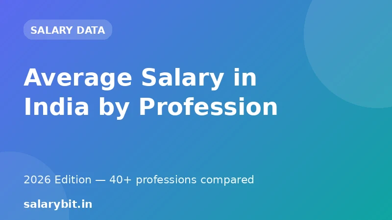

Average Salary in India by Profession 2026
Are you wondering how much you'll earn in your dream job? Or perhaps you're looking to switch careers and want to know which profession pays the most? In this article, we'll dive into the average salary in India by profession for 2026, covering top-paying jobs, lowest-paying jobs, and everything in between.
Based on recent data from various sources, including job boards and recruitment agencies, we'll provide you with accurate and up-to-date information to help you make informed decisions about your career.
Top-Paying Jobs in India 2026
Here are some of the highest-paying jobs in India for 2026:
| Job Title | Average Salary (INR lakhs/year) |
|---|---|
| Surgical Oncologist | 120 |
| Corporate Lawyer | 95 |
| Investment Banker | 85 |
| Pharmacist | 55 |
| Chartered Accountant | 50 |
| Software Engineer (Cloud Architect) | 40 |
Lowest-Paying Jobs in India 2026
Here are some of the lowest-paying jobs in India for 2026:
| Job Title | Average Salary (INR lakhs/year) |
|---|---|
| Farmer | 3.5 |
| Housekeeping Staff | 3 |
| Street Vendor | 2.5 |
| Cleaner/Janitor | 2.5 |
| Kitchen Staff | 2 |
Other Notable Trends in India's Salary Landscape
Apart from these top and bottom-end salaries, here are some other notable trends in India's salary landscape for 2026:
- The average salary in India is projected to grow by 7.5% in 2026
- The cost of living in cities like Mumbai and Delhi is expected to increase by 8% in 2026
- Women's salaries in India are expected to grow at a faster rate than men's salaries in 2026
Frequently Asked Questions (FAQs)
Q: What are some of the highest-paying jobs in India?
A: Some of the highest-paying jobs in India for 2026 include Surgical Oncologist, Corporate Lawyer, Investment Banker, Pharmacist, Chartered Accountant, and Software Engineer (Cloud Architect).
Q: What are the lowest-paying jobs in India?
A: Some of the lowest-paying jobs in India for 2026 include Farmer, Housekeeping Staff, Street Vendor, Cleaner/Janitor, and Kitchen Staff.
Q: Will the cost of living in India increase in 2026?
A: Yes, the cost of living in cities like Mumbai and Delhi is expected to increase by 8% in 2026.